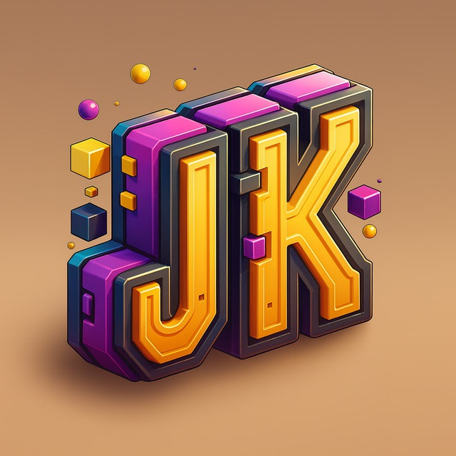
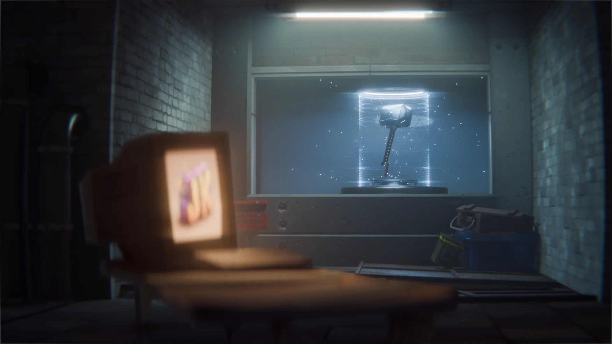
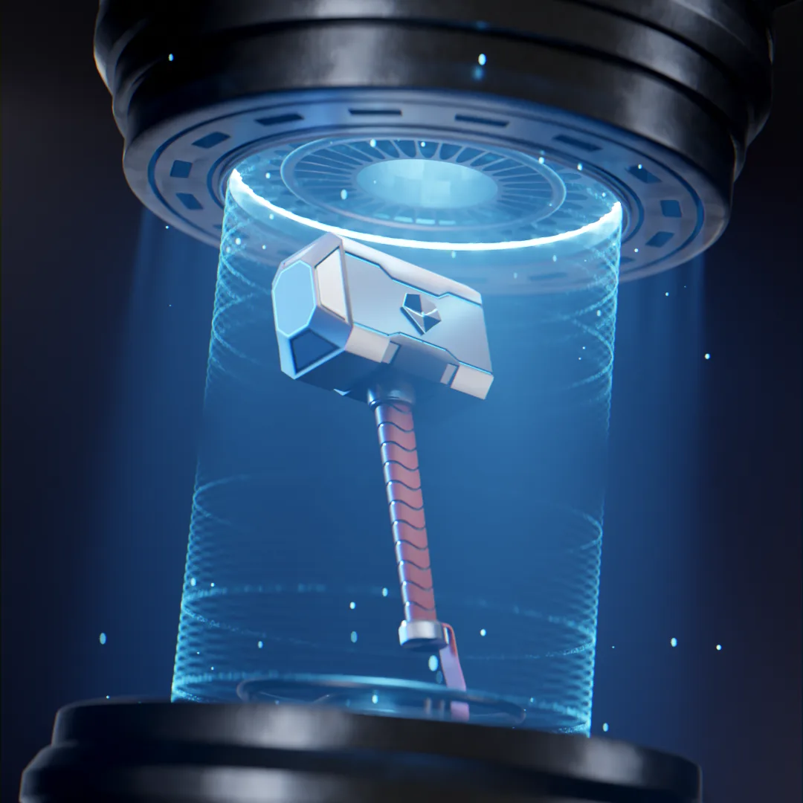
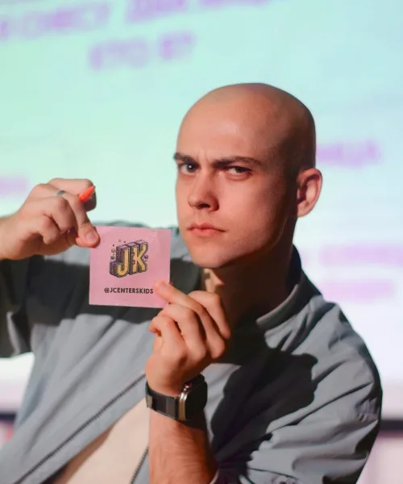

JKidsБез скучных лекций и жёсткого расписания. Короткие видеоуроки по 30 минут в день в Telegram-чате. За неделю ваш ребёнок создаст свою первую сложную 3D-модель и получит крутой рендер для портфолио.
Записаться бесплатно →Для подростков 11–17 лет. Нужен только компьютер или ноутбук.

Пошаговый марафон в Telegram. Внутри 11 коротких видеоуроков (от 3 до 20 минут) — ребёнок смотрит и делает в своём темпе.
Проводим живые онлайн-созвоны: разбираем ошибки из чата и даём фишки, чтобы сделать Молот Тора ещё круче.
Марафон полностью открытый. Никаких «пробных периодов», привязок карт и скрытых подписок.
| День | Тема | Результат |
|---|---|---|
| День 1 | Знакомство с интерфейсом и блокинг формы молота Тора | Базовая сцена сохранена, первый куб в чате |
| День 2 | Работа с углами: первые фаски, инструмент Bevel и функция Apply Scale | Молот теряет острые углы и становится объёмным |
| День 3 | Детализация: создание крутых насечек методами Inset + Extrude | На бойке молота появляется сложный рельеф |
| День 4 | Моделирование рукояти, заглушки, хвостика и сглаживание Auto Smooth | Полностью готовая и проработанная геометрия 3D-модели |
| День 5 | Работа с материалами: настраиваем Base Color, Metallic и Roughness | Молот перестаёт быть серым и получает текстуру металла |
| День 6 | Кастомизация: декоративные линии, пропорциональное редактирование и свечение | Твой молот становится уникальным и кастомным |
| День 7 | Финальный эпик-рендер сцены. Онлайн-разбор работ и фидбек | Готовая крутая картинка для портфолио и понимание, куда расти дальше |


Уже 3 года преподаю Blender, проводя офлайн-занятия для более 100 подростков в неделю. Объясняю сложные инструменты простым языком, а теорию — не скучно.
Вместе проходим путь от создания первого кубика до готовой сцены, которую можно добавить в портфолио. Помогаю найти верный путь и исправить ошибку, если что-то получается не так, как хочется.
Канал JKids в TelegramДа. Марафон полностью бесплатный, без скрытых подписок и привязки банковских карт. Ребёнок просто пробует новое направление, чтобы понять, нравится ему это или нет.
Базовой работе в Blender. Это профессиональная программа, в которой делают графику для кино и современных игр (от Marvel до Fortnite). Хороший старт для будущего дизайнера или программиста.
В Telegram-чате работает живая поддержка. Если программа не запускается или ребёнок запутался в кнопках — он пишет в чат, мы подключаемся и помогаем разобраться.
По итогам марафона можно попасть на мой авторский курс, где мы уже более детально изучаем Blender и его возможности. Идёте по пути профессионала, создаёте работы для портфолио и находите единомышленников.
Заполни форму — напишем в Telegram, как только стартуем.
Не спамим. Пришлём только то, что нужно для марафона.